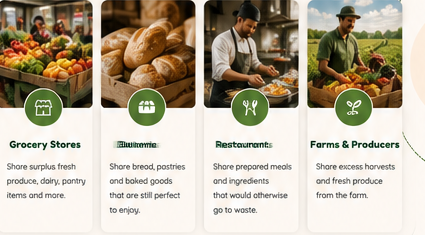
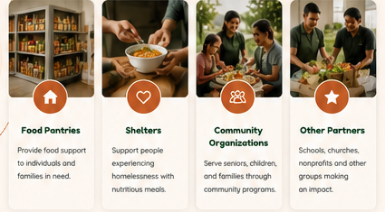
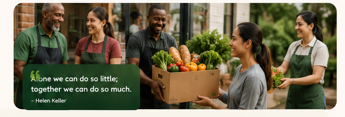

Make safe surplus visible.
Grocery stores, bakeries, restaurants, farms, and other eligible food businesses can share food that might otherwise go to waste.

Share Surplus FoodNourish & Share brings local food businesses and community organisations together so surplus food can find another destination.
Real connection. Real compassion. Real change.
Every participant helps make food more visible, easier to coordinate, and more likely to reach a useful destination.
Grocery stores, bakeries, restaurants, farms, and other eligible food businesses can share food that might otherwise go to waste.

Share Surplus FoodConnects both sides and makes local coordination easier.
Food pantries, shelters, community organisations, and other eligible recipients can discover available surplus and coordinate collection.

Find Available FoodWhen food is available nearby, there may be more time to discover it, understand what is available, and coordinate collection before its availability window disappears.
Whether you share food, distribute food, or support your community, there is a place for you.
